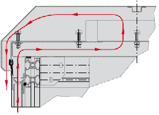

Standard roof for SZD
Standard roof for SZD cabinets is made of two mantles of 1.5 mm thick sheet steel. between the mantles there is a gap, which enables to carry away accumulated condensation water.Roof in special configuration
When it is necessary to cool the cabinet not only by ventilating through side shields and doors but also additional cooling system, it is possible to use special roof made of three mantles of sheet steel. This solution creates two air chambers in one of them it is possible to fasten fan units which increase the airflow.Applying two-chambers roof causes, that the total height of the cabinet is increased by 100 mm.
Additionally, it is possible to fix lifting eyes into the roof. 